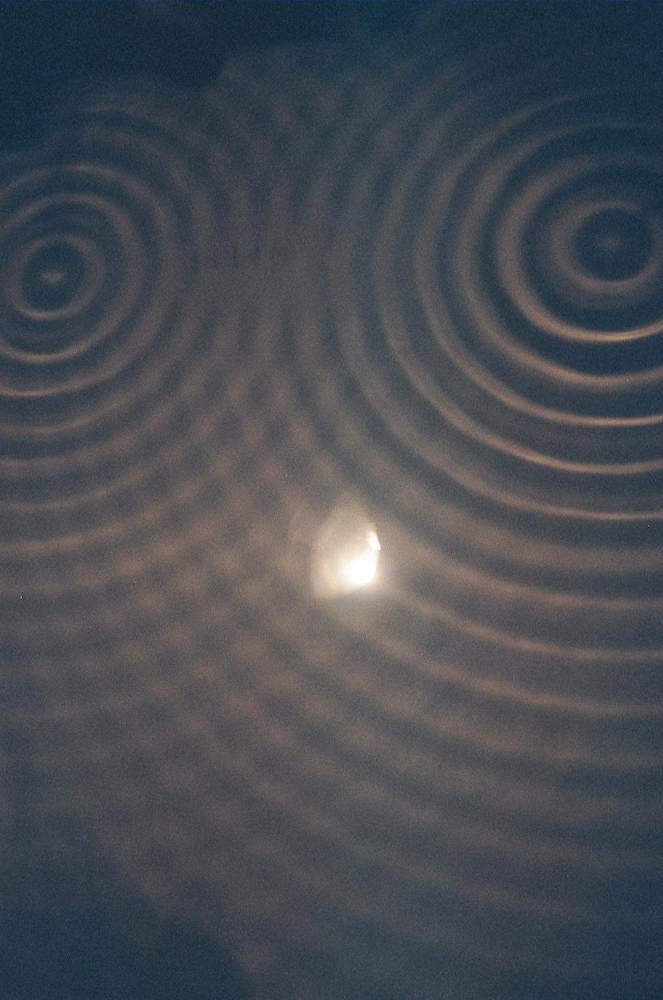

When waves combine: superposition and interference
Why does the sound sometimes get louder and sometimes almost vanish when you walk in front of two loudspeakers playing the same tone?
Prior knowledge
- The speed, frequency and wavelength of a wave are related by the equation $v = f\lambda$chapter How waves form and travel
- After a gap or a small obstacle a wave spreads out in curved wavefronts, that is, it diffractschapter A wave meets an obstacle or a gap
Core path: follow the steps in order. Tasks marked Optional give extra practice. Optional tasks: 6.
Think about it
Two loudspeakers have been set up side by side in the school yard, about two metres apart. Both are connected to the same signal generator, which plays a steady, high-pitched tone. As you walk slowly past the loudspeakers across the yard, the sound seems to get louder and then fade almost to nothing, again and again. When you stop at a quiet spot and cover one of the loudspeakers, the sound gets louder.
How can the sound of two loudspeakers be quieter than the sound of one, and why are the quiet spots in particular places?
Optional Review: wavelength
Predict
Make your predictions before investigating 2 questions
Prediction 1: two pulses meet
Prediction 2: a path difference of half a wavelength
Investigate
Two sources in a ripple tank vibrate in step. Move point P along the dashed line and see where the water vibrates strongly and where it is almost at rest.
Simulation
How to use
The picture shows the ripple tank from above: a light spot is a wave crest and a dark one a trough. Adjust the Source separation $d$, the Wavelength $\lambda$ and the position of point P (Point P at $x$) on the dashed line, which is $L = 8.0\,\text{cm}$ from the sources. On the right (below on a phone) you see the displacement of each wave at point P, the blue $y_1$ from source $S_1$ and the purple $y_2$ from source $S_2$, and their sum in black. The readout gives the distances $s_1$ and $s_2$, the path difference $\Delta s$, the ratio $\tfrac{\Delta s}{\lambda}$ and the amplitude $A_\text{P}$ at point P. Show nodal lines draws the lines on which the water stays at rest. Speed changes only the pace of the animation; the motion is slowed down.
Assumptions of the model
The sources are point-like and vibrate in phase at the same frequency. Each sends out a circular sine wave with an amplitude of $1.0\,\text{mm}$. The decrease of the amplitude with distance is ignored, and so are reflections from the edges of the tank and damping. The speed of the wave is $20\,\text{cm/s}$. All numbers are model values, not measured ones.
How the calculation works
The sources are at $(-\tfrac{d}{2}, 0)$ and $(\tfrac{d}{2}, 0)$ and point P at $(x, L)$, so $s_1 = \sqrt{(x + \tfrac{d}{2})^2 + L^2}$ and $s_2 = \sqrt{(x - \tfrac{d}{2})^2 + L^2}$. The frequency is $f = \tfrac{v}{\lambda}$. The displacement of each wave is $y_i = A \sin\left(2\pi\left(f t - \tfrac{s_i}{\lambda}\right)\right)$, and the displacement of the water is the superposition $y = y_1 + y_2$. The amplitude $A_\text{P}$ is the largest value of the sum $|y_1 + y_2|$ over one period, calculated from $360$ moments. The colours of the picture are calculated from the same sum at every point of the tank.
Experiment 1: walk along the measuring line
Test prediction 2. The distance between the sources is $6.0\,\text{cm}$ and the wavelength $2.0\,\text{cm}$, and they stay fixed. Move point P from the middle to the right and record a measurement at least at $x = 0$, $1.4\,\text{cm}$, $3.0\,\text{cm}$, $4.9\,\text{cm}$ and $7.4\,\text{cm}$. At which path differences is the amplitude largest, and at which is it almost zero?
Initial state: source separation $d$ = $6\,\text{cm}$, wavelength $\lambda$ = $2\,\text{cm}$, position of point P $x$ = $0\,\text{cm}$. Kept constant: source separation $d$, wavelength $\lambda$. Varied: position of point P $x$.
| position of point P $x$ | $\Delta s$ $(\text{cm})$ | $\Delta s/\lambda$ | $A_\text{P}$ $(\text{mm})$ |
|---|
Experiment 2: the same point, a different wavelength
Point P is now at $x = 3.0\,\text{cm}$ directly in front of source $S_2$, so $s_1 = 10.0\,\text{cm}$, $s_2 = 8.0\,\text{cm}$ and the path difference $2.0\,\text{cm}$ stays constant. Change only the wavelength and record a measurement at least with the values $1.0\,\text{cm}$, $2.0\,\text{cm}$ and $4.0\,\text{cm}$. The frequency of the sources changes at the same time, because $f = \tfrac{v}{\lambda}$.
Initial state: source separation $d$ = $6\,\text{cm}$, wavelength $\lambda$ = $2\,\text{cm}$, position of point P $x$ = $3\,\text{cm}$. Kept constant: source separation $d$, position of point P $x$. Varied: wavelength $\lambda$.
| wavelength $\lambda$ | $\Delta s/\lambda$ | $A_\text{P}$ $(\text{mm})$ | $f$ $(\text{Hz})$ |
|---|
Conclusion: when do waves strengthen each other
Write, on the basis of your tables: for which values of the ratio $\tfrac{\Delta s}{\lambda}$ was the amplitude at point P largest, and for which almost zero? Explain why exactly these path differences strengthen or weaken, and why the same point can be quiet at another wavelength.
Model answer
In experiment 1 the amplitude was largest, $2.0\,\text{mm}$, when the path difference was $0$, $2.0\,\text{cm}$ or $4.0\,\text{cm}$, that is, when $\tfrac{\Delta s}{\lambda}$ was $0$, $1$ or $2$. It was almost zero, about $0.1\,\text{mm}$, at the path differences $0.97\,\text{cm}$ and $3.02\,\text{cm}$, where the ratio is about $0.5$ and $1.5$. The sources send out a crest at the same moment, so a path that is a whole wavelength longer brings the wave to the point in the same phase: crest meets crest. An extra path of half a wavelength brings it half a period late, so a crest meets a trough and the displacements cancel. In experiment 2 the path difference was $2.0\,\text{cm}$ all the time, but at the wavelength $4.0\,\text{cm}$ the ratio was $0.5$ and the amplitude $0\,\text{mm}$, whereas at the wavelengths $1.0\,\text{cm}$ and $2.0\,\text{cm}$ the amplitude was $2.0\,\text{mm}$. The numbers are values from the simulation.
Assess your own answer
Tick the points your own answer already contains.
Review the theory summary and practise with the exercises.
Theory summary
Key idea
The principle of superposition
When two waves travel in the same medium, they can be at the same place at the same time. The displacement of the medium is then the sum of the displacements of the two waves on their own. This is the principle of superposition:
$$y = y_1 + y_2$$
where $y$ is the displacement of the medium from its equilibrium position, $y_1$ is the displacement of the first wave and $y_2$ that of the second wave at the same place at the same moment. The displacements are added with their signs: a displacement upwards is positive, downwards negative.
Superposition is clearest when two equally large pulses of the same shape are sent towards each other from opposite ends of a string. When pulses on the same side are on top of each other, the string is displaced for a moment twice as much as by one pulse. When the pulses are on opposite sides, they cancel each other, and the string is straight for a moment. After meeting, however, the pulses continue unchanged in their own directions, as if the other had never been there: waves pass through each other and do not collide.
The combined effect of waves at the same place is called interference. When the waves strengthen each other and the displacement of the resultant wave grows, the interference is constructive. When they weaken each other, the interference is destructive. In the chapter How waves form and travel the displacement of a wave varied with place and time; the principle of superposition holds at every place and at every moment separately.
Two sources in phase
In a ripple tank two small dippers can be attached to the same vibrator, which moves them up and down in step. The sources then have the same frequency, and they are in phase: each sends out a crest at the same moment. A circular wave spreads from each source, as after a gap in the chapter A wave meets an obstacle or a gap. Two loudspeakers connected to the same signal generator work in the same way for sound waves.
The waves meet at every point of the tank. At some points a crest always meets a crest and a trough a trough, and the water vibrates strongly. At others a crest always meets a trough, and the water stays almost at rest. The water is at rest along whole lines, which are called nodal lines. Between them are the lines of constructive interference. The pattern stays in place even though the waves keep travelling, because the frequency of the sources is the same and the phase difference between them does not change. If the frequencies were slightly different, the strong and weak places would drift.
The condition for constructive and destructive interference
Whether the interference at point P is constructive or destructive depends on how much farther one wave has travelled than the other. The path difference is the difference of the sources' distances from point P:
$$\Delta s = |s_1 - s_2|$$
where $\Delta s$ is the path difference ($\text{m}$), $s_1$ is the distance of source $S_1$ from point P ($\text{m}$) and $s_2$ is the distance of source $S_2$ from point P ($\text{m}$).
The sources send out a crest at the same moment, so the wave coming from farther away lags behind at point P by the path difference. If the path difference is a whole number of wavelengths, the waves arrive in phase, crest with crest, and the interference is constructive:
$$\Delta s = n\lambda, \quad n = 0, 1, 2, \ldots$$
where $\lambda$ is the wavelength ($\text{m}$) and $n$ is a whole number. The amplitude of the resultant wave is then the sum of the amplitudes of the waves, $2A$ for equal amplitudes. If the path difference is half a wavelength more than a whole number of wavelengths, a crest meets a trough, and the interference is destructive:
$$\Delta s = \left(n + \tfrac{1}{2}\right)\lambda, \quad n = 0, 1, 2, \ldots$$
The amplitude of the resultant wave is then the difference of the amplitudes. Equal amplitudes cancel each other, and the point stays at rest.

The lines of the pattern
Each number $n = 1, 2, \ldots$ corresponds to one line in the pattern on each side of the perpendicular bisector; $n = 0$ is, in the constructive case, the perpendicular bisector itself and, in the destructive case, the two nodal lines nearest to the perpendicular bisector. On the perpendicular bisector of the sources, that is, the line whose every point is equally far from both sources, the path difference is zero. There the interference is constructive at all frequencies. The path difference cannot be greater than the distance $d$ between the sources, because one side of a triangle is shorter than the sum of the other two. So there are only a finite number of lines. When the wavelength gets smaller, that is, the frequency grows, the conditions are met at smaller path differences, and the lines get closer together.
What matters is therefore the ratio of the path difference to the wavelength, $\tfrac{\Delta s}{\lambda}$, not the path difference alone. The same point can be quiet at one frequency and loud at another. Destructive interference does not destroy energy: less of it goes to the nodal lines and correspondingly more to the places of constructive interference.
Common misconception
Many think that waves that meet collide and bounce back or destroy each other. Waves, however, pass through each other: while they meet, the displacements are added, and afterwards each wave continues unchanged. When opposite pulses cancel each other, the string is straight for a moment, but it is moving, and the pulses reappear.
Another common mistake is to take the path difference $\Delta s = \lambda$ to be destructive, because the other wave has travelled "a longer way". After a whole wavelength, however, the wave is in phase again, so the interference is constructive. Destructive interference needs an extra half wavelength: $\tfrac{1}{2}\lambda$, $\tfrac{3}{2}\lambda$, $\tfrac{5}{2}\lambda$ and so on.
Summary
- The principle of superposition: the displacements of waves at the same place are added with their signs, $y = y_1 + y_2$. Waves pass through each other and continue unchanged.
- Interference is the combined effect of waves. In constructive interference a crest meets a crest, in destructive interference a crest meets a trough.
- For waves from two sources of the same frequency and in phase the path difference $\Delta s = |s_1 - s_2|$ decides: $\Delta s = n\lambda$ gives constructive and $\Delta s = \left(n + \tfrac{1}{2}\right)\lambda$ destructive interference.
- On nodal lines the medium stays almost at rest. On the perpendicular bisector of the sources the interference is always constructive, and a smaller wavelength makes the lines closer together.
- Optional: the Fourier transform splits a signal into sine waves, and the spectrum shows which frequencies the signal contains.
Optional Return to your predictions
Compare your predictions with the theory and your tables. Then return to the opening question: why are there quiet spots in front of two loudspeakers, and why does covering one loudspeaker make the sound louder?
Would you change your prediction?
Optional Optional: a signal as a sum of sine waves
Fourier analysis
The principle of superposition works in the other direction too. Every periodic signal, for example the sound of an instrument, can be written as a sum of sine waves. The frequencies of the sine waves are multiples of the fundamental frequency of the signal, and their amplitudes tell how strong they are. The Fourier transform is a calculation method that finds these frequencies and amplitudes in a signal. The result is shown as a spectrum: frequency on the horizontal axis and the amplitude of each frequency on the vertical axis.
The upper part of the figure shows three sine waves with frequencies $220\,\text{Hz}$, $660\,\text{Hz}$ and $1100\,\text{Hz}$, and their sum is almost a square wave. The spectrum shows only these three frequencies. The Fourier transform is useful in analysing sound: from the spectrum you can see why a piano and a violin playing the same note sound different, and from noise you can see which frequencies dominate it. Measuring programs calculate the spectrum with the fast Fourier transform (FFT), which is used in the chapter Sound as a wave: pitch, timbre and the Doppler effect.
Optional Optional: read the spectrum
Apply
Worked example
Problem
Two loudspeakers are connected to the same signal generator, so they play in phase the same sound, whose frequency is $680\,\text{Hz}$. The speed of sound in air is $340\,\text{m/s}$. A listener is $4.25\,\text{m}$ from one loudspeaker and $3.00\,\text{m}$ from the other. Does the listener hear a loud or a weak sound?
Step 1/7
Given and find. Frequency $f = 680\,\text{Hz}$, speed of sound $v = 340\,\text{m/s}$, distances $s_1 = 4.25\,\text{m}$ and $s_2 = 3.00\,\text{m}$. We are asked whether the interference at the listener is constructive or destructive.
Step 2/7
Principle. The loudspeakers are in phase and play the same frequency, so the type of interference is decided by the ratio of the path difference to the wavelength. The wavelength follows from the speed and frequency of the wave, $v = f\lambda$ (chapter How waves form and travel).
Step 3/7
Formula solved for the unknown.
$$\begin{aligned} \lambda &= \frac{v}{f} \\ \Delta s &= s_1 - s_2 \\ \frac{\Delta s}{\lambda} &= \frac{s_1 - s_2}{\lambda} \end{aligned}$$
Step 4/7
Conversions. None needed: the speed is in $\text{m/s}$, the frequency in hertz and the distances in metres, so the wavelength and the path difference come out in metres and their ratio has no unit.
Step 5/7
Substitution. $$\begin{aligned} \lambda &= \frac{v}{f} \\ &= \frac{340\,\text{m/s}}{680\,\text{Hz}} = 0.500\,\text{m} \\ \Delta s &= s_1 - s_2 \\ &= 4.25\,\text{m} - 3.00\,\text{m} = 1.25\,\text{m} \\ \frac{\Delta s}{\lambda} &= \frac{1.25\,\text{m}}{0.500\,\text{m}} = 2.5 \end{aligned}$$
Step 6/7
Answer. The path difference is $2.5$ wavelengths, that is, $\left(2 + \tfrac{1}{2}\right)\lambda$, so the waves arrive in opposite phase and the interference is destructive: the listener hears a weak sound. The path difference $1.25\,\text{m}$ has three significant figures like the distances, so the ratio $2.5$ is clearly a half and not a whole number.
Step 7/7
Reasonableness. The wavelength is $0.500\,\text{m}$, so the path differences for constructive interference are $1.00\,\text{m}$ and $1.50\,\text{m}$. The path difference $1.25\,\text{m}$ is exactly halfway between them, where destructive interference has to be. The sound does not practically vanish completely, because the sound from farther away is slightly weaker and sound is also reflected from walls and the ground.
Optional Find the error
Apply to a new situation
Two loudspeakers in phase play the same sound. A microphone is moved sideways from the perpendicular bisector of the loudspeakers, and the first quiet spot is found when the microphone is $5.17\,\text{m}$ from one loudspeaker and $5.00\,\text{m}$ from the other. The speed of sound is $340\,\text{m/s}$.
What is the frequency of the sound? Give the answer in hertz.
Hint 1: a guiding question
On the perpendicular bisector the path difference is zero and the sound is loud. What path difference does the first quiet spot next to it correspond to?
Hint 2: what is the connection
The first destructive spot is $n = 0$: $\Delta s = \tfrac{1}{2}\lambda$, so $\lambda = 2\Delta s$. The frequency then comes from $v = f\lambda$.
Hint 3: an intermediate step
$\lambda = 0.34\,\text{m}$.
Show the solution
Given
distances from the loudspeakers $s_1 = 5.17\,\text{m}$ and $s_2 = 5.00\,\text{m}$, speed of sound $v = 340\,\text{m/s}$; the spot is the first quiet spot next to the perpendicular bisector
Find
the frequency $f$ of the sound in hertz
Principle
The loudspeakers are in phase and play the same frequency. On the perpendicular bisector the path difference is zero and the interference is constructive, so the first quiet spot next to it is destructive interference with $n = 0$: the path difference is half a wavelength. The frequency follows from the wavelength by $v = f\lambda$.
Formula
so $\lambda = 2(s_1 - s_2)$, and $v = f\lambda$, so
$$f = \frac{v}{2(s_1 - s_2)}$$
Conversions
None needed: the distances are in metres and the speed in $\text{m/s}$, so the frequency comes out in $\tfrac{1}{\text{s}} = \text{Hz}$.
Substitution
Answer
$1000\,\text{Hz}$
Or $1.0\,\text{kHz}$, two significant figures, because the path difference $0.17\,\text{m}$ is given to two figures.
Reasonableness
Check the other way: at $1000\,\text{Hz}$ the wavelength is $\tfrac{340\,\text{m/s}}{1000\,\text{Hz}} = 0.34\,\text{m}$, and half of it is $0.17\,\text{m}$, as in the measured path difference. A kilohertz sound is an ordinary, clearly audible sound, so the order of magnitude fits.
Check your understanding
1. Concept
2. Amplitude at a point
Two sources in phase in a ripple tank have a frequency of $10\,\text{Hz}$, and the speed of the wave is $20\,\text{cm/s}$. Point Q is $13.0\,\text{cm}$ from source $S_1$ and $9.0\,\text{cm}$ from source $S_2$. The amplitude of each wave at point Q is $2.0\,\text{mm}$.
What is the amplitude of the vibration of the water at point Q? Give the answer in millimetres.
Hint 1: a guiding question
First calculate the wavelength from $v = f\lambda$.
Hint 2: what is the connection
Compare the path difference $\Delta s = s_1 - s_2$ with the wavelength: is the ratio a whole number or a half?
Hint 3: an intermediate step
$\lambda = 2.0\,\text{cm}$ and $\Delta s = 4.0\,\text{cm} = 2\lambda$.
Show the solution
Given
frequency $f = 10\,\text{Hz}$, wave speed $v = 20\,\text{cm/s}$, distances $s_1 = 13.0\,\text{cm}$ and $s_2 = 9.0\,\text{cm}$, amplitude of each wave $A = 2.0\,\text{mm}$
Find
the amplitude $A_\text{Q}$ of the vibration of the water at point Q in millimetres
Principle
The sources are in phase and have the same frequency, so the type of interference is decided by the ratio of the path difference to the wavelength. If the ratio is a whole number, the waves arrive in phase and by the principle of superposition the amplitudes are added.
Formula
$\lambda = \dfrac{v}{f}$ and $\Delta s = s_1 - s_2$; when $\tfrac{\Delta s}{\lambda}$ is a whole number,
$$A_\text{Q} = A + A = 2A$$
Conversions
None needed: the speed and the distances are in centimetres, so the wavelength comes out in centimetres, and the amplitude stays in millimetres.
Substitution
so the interference is constructive and
Answer
$4.0\,\text{mm}$
Two significant figures like the amplitude $2.0\,\text{mm}$.
Reasonableness
The amplitude cannot be larger than the sum of the amplitudes of the waves, $4.0\,\text{mm}$, and in constructive interference it is exactly that. If the path difference had been $3.0\,\text{cm}$, that is, $1.5\lambda$, the amplitude would have been zero.
Suggestion: one answer does not show everything you can do, but review the theory summary and do the core exercises.
Optional 3. Explain the quiet spots of the loudspeakers
Return to the loudspeakers in the school yard. Explain with the principle of superposition and the path difference why the sound is sometimes loud and sometimes weak as you walk, why at a quiet spot the sound gets louder when one loudspeaker is covered, and what happens to the quiet spots if the frequency of the sound is raised.
Model answer
Both loudspeakers send out the same sound in phase, and at the listener the air pressure variation is the sum of two sound waves. When the difference of the distances is a whole number of wavelengths, $\Delta s = n\lambda$, the waves arrive in phase and strengthen each other. When the difference is $\left(n + \tfrac{1}{2}\right)\lambda$, a compression of one wave arrives at the same time as a rarefaction of the other, and the waves weaken each other: the sound is quiet. As the listener walks, the path difference changes, so these spots alternate. When one loudspeaker is covered, there is no wave to cancel, and the listener hears the sound of one loudspeaker, which is louder than the almost cancelled sum of two. When the frequency is raised, the wavelength $\lambda = \tfrac{v}{f}$ gets smaller, so the conditions are met at smaller path differences and the quiet spots move closer together.
Assess your own answer
Tick the points your own answer already contains.
Review the theory summary and practise with the exercises.
Exit ticket
Finally, two quick questions. Answer first on your own and only then open the answer.
- Write the conditions for constructive and destructive interference for two sources of the same frequency and in phase. What do the symbols mean?
Answer
Constructive: $\Delta s = n\lambda$, destructive: $\Delta s = \left(n + \tfrac{1}{2}\right)\lambda$, where $n = 0, 1, 2, \ldots$ The path difference $\Delta s = |s_1 - s_2|$ is the difference of the sources' distances from the point considered and $\lambda$ is the wavelength.
- Two loudspeakers play the same sound in phase. Why is the sound loud at all frequencies on the perpendicular bisector of the loudspeakers, which is equally far from both?
Answer
Every point of the perpendicular bisector is equally far from both loudspeakers, so the path difference is $\Delta s = 0 = 0 \cdot \lambda$. The waves always arrive in phase, and the condition $\Delta s = n\lambda$ is met with $n = 0$ whatever the wavelength.
Review the chapter's concepts
Cards you mark Review later collect in your review deck.
- Interference
- The combined effect of two or more waves where they meet.
- Constructive interference
- Waves that meet in phase have displacements in the same direction, so the amplitude of the resultant wave grows.
- Destructive interference
- Waves that meet in opposite phase have opposite displacements, so the amplitude of the resultant wave shrinks.
- Spectrum
- A presentation of which frequencies an oscillation or wave contains and how strong they are.
- Sound
- A mechanical wave that travels in a gas, a liquid or a solid but not in a vacuum.
Exercises
Level 1 · basic practice 5 exercises
One formula or one step of reasoning. Core exercises first, the rest is extra practice.
- Core
Two pulses travel towards each other on a string. Both displace the string upwards, one by at most $2.5\,\text{cm}$ and the other by $1.5\,\text{cm}$.
How large is the greatest displacement of the string at the moment when the peaks of the pulses are on top of each other?
Answer
$4.0\,\text{cm}$
Show the solution
Given
the greatest displacements of the pulses $y_1 = 2.5\,\text{cm}$ and $y_2 = 1.5\,\text{cm}$, both upwards
Find
the greatest displacement $y$ of the string in centimetres when the peaks are on top of each other
Principle
By the principle of superposition the displacement of the string is the sum of the displacements of the pulses at the same place. When the peaks are on top of each other, the greatest displacement of each pulse is at the same place, and since both are upwards, they strengthen each other.
Formula
$y = y_1 + y_2$
Conversions
None needed: both displacements are in centimetres.
Substitution
$y$$= 2.5\,\text{cm} + 1.5\,\text{cm}$$= 4.0\,\text{cm}$Answer
$4.0\,\text{cm}$
Upwards, two significant figures like the displacements $2.5\,\text{cm}$ and $1.5\,\text{cm}$.
Reasonableness
Pulses on the same side strengthen each other, so the result has to be larger than either alone, $2.5\,\text{cm}$, and $4.0\,\text{cm}$ is. After meeting, the pulses continue again as their own pulses of $2.5\,\text{cm}$ and $1.5\,\text{cm}$.
- Core
Two pulses meet on a string. One displaces the string by at most $3.0\,\text{cm}$ upwards, the other by $1.2\,\text{cm}$ downwards.
What is the displacement of the string at the point where the centres of the pulses are on top of each other? Upwards is the positive direction. Give the answer with its sign in centimetres.
Answer
$1.8\,\text{cm}$
Show the solution
Given
the greatest displacements of the pulses $y_1 = +3.0\,\text{cm}$ (upwards) and $y_2 = -1.2\,\text{cm}$ (downwards), upwards positive
Find
the displacement $y$ of the string with its sign in centimetres at the place where the centres of the pulses are on top of each other
Principle
By the principle of superposition the displacements are added with their signs. Pulses on opposite sides weaken each other, so the sum is smaller than the displacement of the larger pulse.
Formula
$y = y_1 + y_2$
Conversions
None needed: the displacements are in centimetres.
Substitution
$y$$= 3.0\,\text{cm} + (-1.2\,\text{cm})$$= 1.8\,\text{cm}$Answer
$1.8\,\text{cm}$
That is, upwards, two significant figures, because the displacements are given to a tenth of a centimetre.
Reasonableness
The result is the difference of the larger and the smaller pulse, and it is positive because the pulse displacing upwards is larger. If the pulses were equally large, the displacement would be zero and the string straight for a moment.
Two loudspeakers in phase play a sound with a wavelength of $0.60\,\text{m}$. At four listening points the path difference is a) $0.60\,\text{m}$, b) $0.90\,\text{m}$, c) $1.20\,\text{m}$ and d) $1.50\,\text{m}$.
Is the interference at each point constructive or destructive? Justify.
Answer
a) constructive; b) destructive; c) constructive; d) destructive
Show the solution
Find
whether the interference at each of four points is constructive or destructive, when $\lambda = 0.60\,\text{m}$
Principle
For waves from two sources of the same frequency and in phase the interference is constructive when the path difference is a whole number of wavelengths, $\Delta s = n\lambda$, and destructive when it is half a wavelength more than a whole number, $\Delta s = \left(n + \tfrac{1}{2}\right)\lambda$. So each path difference is divided by the wavelength.
Model answer
a) $\tfrac{0.60\,\text{m}}{0.60\,\text{m}} = 1$, a whole number, so the interference is constructive. b) $\tfrac{0.90\,\text{m}}{0.60\,\text{m}} = 1.5 = 1 + \tfrac{1}{2}$, so destructive. c) $\tfrac{1.20\,\text{m}}{0.60\,\text{m}} = 2$, so constructive. d) $\tfrac{1.50\,\text{m}}{0.60\,\text{m}} = 2.5 = 2 + \tfrac{1}{2}$, so destructive. At the constructive points the wave from farther away lags by a whole number of periods and arrives crest with crest; at the destructive points it lags half a period more, so a crest arrives with a trough. The size of the path difference alone does not decide: the larger path difference c) is constructive, although the smaller b) is destructive.
Two loudspeakers in phase play a sound with a wavelength of $0.68\,\text{m}$.
What is the smallest path difference at which the sound is weak at the listening point? Give the answer in metres.
Answer
$0.34\,\text{m}$
Show the solution
Given
wavelength $\lambda = 0.68\,\text{m}$, loudspeakers in phase
Find
the smallest path difference $\Delta s$ in metres at which the interference is destructive
Principle
The condition for destructive interference is $\Delta s = \left(n + \tfrac{1}{2}\right)\lambda$, and the smallest path difference comes from the smallest whole number $n = 0$. Then the wave from farther away lags half a period, and a crest arrives with a trough.
Formula
$\Delta s = \left(n + \tfrac{1}{2}\right)\lambda$, and when $n = 0$: $\Delta s = \dfrac{\lambda}{2}$
Conversions
None needed: the wavelength is in metres.
Substitution
$\Delta s$$= \dfrac{0.68\,\text{m}}{2}$$= 0.34\,\text{m}$Answer
$0.34\,\text{m}$
Two significant figures like the wavelength $0.68\,\text{m}$.
Reasonableness
The next destructive path differences are $\tfrac{3}{2}\lambda = 1.02\,\text{m}$ and $\tfrac{5}{2}\lambda = 1.70\,\text{m}$, so $0.34\,\text{m}$ is the smallest of them. A path difference of zero would give constructive interference, so the smallest destructive path difference has to be greater than zero.
Two sources in a ripple tank vibrate in phase, and the wavelength is $1.5\,\text{cm}$. On the perpendicular bisector there is the line of constructive interference $n = 0$, and on each side of it the next ones are $n = 1$ and $n = 2$.
How large is the path difference on the line $n = 2$? Give the answer in centimetres.
Answer
$3.0\,\text{cm}$
Show the solution
Given
wavelength $\lambda = 1.5\,\text{cm}$, line of constructive interference $n = 2$
Find
the path difference $\Delta s$ in centimetres on the line $n = 2$
Principle
The sources are in phase, so on the lines of constructive interference the path difference is a whole number of wavelengths, $\Delta s = n\lambda$. On the line $n = 2$ the other wave has travelled a path two wavelengths longer.
Formula
$\Delta s = n\lambda$
Conversions
None needed: the wavelength is in centimetres.
Substitution
$\Delta s$$= 2 \cdot 1.5\,\text{cm}$$= 3.0\,\text{cm}$Answer
$3.0\,\text{cm}$
Two significant figures like the wavelength $1.5\,\text{cm}$.
Reasonableness
On the line $n = 0$ the path difference is $0$ and on the line $n = 1$ it is $1.5\,\text{cm}$; each next line adds one wavelength, so the value $3.0\,\text{cm}$ on the line $n = 2$ fits the series.
Level 2 · applied practice 4 exercises
Two steps, a unit conversion or rearranging a formula. Core exercises first, the rest is extra practice.
- Core
Two loudspeakers A and B in phase are $1.20\,\text{m}$ apart. A listener stands $1.60\,\text{m}$ from loudspeaker B directly in front of it, so that the line between the listener and loudspeaker B is perpendicular to the line between the loudspeakers.
What is the greatest wavelength at which it is quiet at the listener's position? Give the answer in metres.
Answer
$0.80\,\text{m}$
Show the solution
Given
distance between the loudspeakers $d = 1.20\,\text{m}$, listener's distance from loudspeaker B $s_\text{B} = 1.60\,\text{m}$ perpendicular to the line between the loudspeakers, loudspeakers in phase
Find
the greatest wavelength $\lambda$ in metres at which it is quiet at the listener's position
Principle
The listener, loudspeaker B and loudspeaker A form a right triangle with the right angle at loudspeaker B, so the distance from loudspeaker A follows from the Pythagorean theorem. It is quiet in destructive interference, $\Delta s = \left(n + \tfrac{1}{2}\right)\lambda$. Solved for the wavelength, $\lambda = \tfrac{\Delta s}{n + 1/2}$, which is greatest when $n = 0$.
Formula
$s_\text{A} = \sqrt{d^2 + s_\text{B}^2}$, $\Delta s = s_\text{A} - s_\text{B}$ and $\Delta s = \tfrac{1}{2}\lambda$, so $\lambda = 2\left(\sqrt{d^2 + s_\text{B}^2} - s_\text{B}\right)$
Conversions
None needed: all distances are in metres.
Substitution
$s_\text{A}$$= \sqrt{(1.20\,\text{m})^2 + (1.60\,\text{m})^2}$$= \sqrt{4.00\,\text{m}^2}$$= 2.00\,\text{m}$$\lambda$$= 2 \cdot (2.00\,\text{m} - 1.60\,\text{m})$$= 2 \cdot 0.40\,\text{m}$$= 0.80\,\text{m}$Answer
$0.80\,\text{m}$
Two significant figures, because the path difference $0.40\,\text{m}$ is the difference of the distances to a centimetre.
Reasonableness
Check: at the wavelength $0.80\,\text{m}$ the path difference $0.40\,\text{m}$ is exactly half a wavelength, so a crest meets a trough. With a greater wavelength the path difference would be less than a half, and there would be no destructive interference. The wavelength corresponds to a sound of about $\tfrac{340\,\text{m/s}}{0.80\,\text{m}} \approx 430\,\text{Hz}$, an ordinary sound in the audible range.
- Core
Two sources in a ripple tank vibrate in phase at a frequency of $15\,\text{Hz}$, and the waves travel at a speed of $0.30\,\text{m/s}$. Point Q is on the nodal line nearest to the perpendicular bisector, and it is $9.0\,\text{cm}$ from source $S_2$, which is the nearer one.
How far is point Q from source $S_1$? Give the answer in centimetres.
Answer
$10.0\,\text{cm}$
Show the solution
Given
frequency $f = 15\,\text{Hz}$, wave speed $v = 0.30\,\text{m/s}$, distance of point Q from the nearer source $s_2 = 9.0\,\text{cm}$; Q is on the nodal line nearest to the perpendicular bisector
Find
the distance $s_1$ of point Q from source $S_1$ in centimetres
Principle
The wavelength follows from $v = f\lambda$. On a nodal line the interference is destructive, $\Delta s = \left(n + \tfrac{1}{2}\right)\lambda$, and the nodal line nearest to the perpendicular bisector is $n = 0$. Since Q is nearer to source $S_2$, the distance from source $S_1$ is half a wavelength greater.
Formula
$\lambda = \dfrac{v}{f}$ and $s_1 - s_2 = \dfrac{\lambda}{2}$, so $s_1 = s_2 + \dfrac{v}{2f}$
Conversions
$v$$= 0.30\,\text{m/s}$$= 0.30 \cdot 100\,\text{cm/s}$$= 30\,\text{cm/s}$so that the wavelength comes out in centimetres like $s_2$.
Substitution
$s_1$$= 9.0\,\text{cm} + \dfrac{30\,\text{cm/s}}{2 \cdot 15\,\text{Hz}}$$= 9.0\,\text{cm} + 1.0\,\text{cm}$$= 10.0\,\text{cm}$Answer
$10.0\,\text{cm}$
To a millimetre like the distance $9.0\,\text{cm}$, because the result is the sum of this distance and the addition $1.0\,\text{cm}$.
Reasonableness
The wavelength is $\tfrac{30\,\text{cm/s}}{15\,\text{Hz}} = 2.0\,\text{cm}$, and the path difference $10.0\,\text{cm} - 9.0\,\text{cm} = 1.0\,\text{cm}$ is half of it, as it has to be on the nearest nodal line. If the conversion had been forgotten, the addition would have been $0.01$, which would not be a sensible wavelength in centimetres for a ripple tank.
Two sources in a ripple tank vibrate in phase, and the wavelength is $2.0\,\text{cm}$. The path from source $S_1$ to point R is $14.0\,\text{cm}$ and from source $S_2$ $9.0\,\text{cm}$. Source $S_1$ vibrates more strongly: the amplitude of its wave at point R is $3.0\,\text{mm}$ and that of the wave from $S_2$ is $2.0\,\text{mm}$.
What is the amplitude of the vibration of the water at point R? Give the answer in millimetres.
Answer
$1.0\,\text{mm}$
Show the solution
Given
wavelength $\lambda = 2.0\,\text{cm}$, distances $s_1 = 14.0\,\text{cm}$ and $s_2 = 9.0\,\text{cm}$, amplitudes at point R $A_1 = 3.0\,\text{mm}$ and $A_2 = 2.0\,\text{mm}$
Find
the amplitude $A_\text{R}$ of the vibration of the water at point R in millimetres
Principle
First we find out from the ratio of the path difference to the wavelength whether the waves arrive in phase or in opposite phase. In opposite phase a crest of one wave is always at a trough of the other, and by the principle of superposition the displacements are subtracted, so the amplitude is the difference of the amplitudes. Waves of different sizes do not cancel each other completely.
Formula
$\Delta s = s_1 - s_2$; if $\tfrac{\Delta s}{\lambda} = n + \tfrac{1}{2}$, $A_\text{R} = A_1 - A_2$
Conversions
None needed: the distances and the wavelength are in centimetres, and the amplitudes stay in millimetres.
Substitution
$\Delta s$$= 14.0\,\text{cm} - 9.0\,\text{cm}$$= 5.0\,\text{cm}$$\dfrac{\Delta s}{\lambda}$$= \dfrac{5.0\,\text{cm}}{2.0\,\text{cm}}$$= 2.5$$= 2 + \tfrac{1}{2}$so the interference is destructive, and
$A_\text{R}$$= 3.0\,\text{mm} - 2.0\,\text{mm}$$= 1.0\,\text{mm}$Answer
$1.0\,\text{mm}$
To a tenth of a millimetre like the amplitudes $3.0\,\text{mm}$ and $2.0\,\text{mm}$.
Reasonableness
The amplitude has to be between zero and the sum $5.0\,\text{mm}$. In destructive interference it is the smallest possible, and since the waves are of different sizes, it is not zero but the difference $1.0\,\text{mm}$.
Two equally large pulses of the same shape travel towards each other on a long taut string, one above the string and the other below it. The distance between the centres of the pulses is at first $1.20\,\text{m}$, and each pulse travels at a speed of $0.40\,\text{m/s}$.
How long does it take before the string is completely straight for a moment? Give the answer in seconds.
Answer
$1.5\,\text{s}$
Show the solution
Given
the distance between the centres of the pulses at first $s = 1.20\,\text{m}$, the speed of each pulse $v = 0.40\,\text{m/s}$; the pulses are equally large and of the same shape but on opposite sides of the string
Find
the time $t$ in seconds until the string is completely straight for a moment
Principle
By the principle of superposition, equally large pulses of the same shape on opposite sides cancel each other at every point exactly when they are exactly on top of each other, that is, when their centres are at the same place. The pulses approach each other, each at the speed $v$, so the distance between them shrinks by $2vt$ in the time $t$.
Formula
$2vt = s$, so $t = \dfrac{s}{2v}$
Conversions
None needed: the distance is in metres and the speed in $\text{m/s}$.
Substitution
$t$$= \dfrac{1.20\,\text{m}}{2 \cdot 0.40\,\text{m/s}}$$= \dfrac{1.20\,\text{m}}{0.80\,\text{m/s}}$$= 1.5\,\text{s}$Answer
$1.5\,\text{s}$
Two significant figures like the speed $0.40\,\text{m/s}$.
Reasonableness
In this time each pulse travels $0.40\,\text{m/s} \cdot 1.5\,\text{s} = 0.60\,\text{m}$, half of the original distance, so they meet exactly in the middle, as pulses of equal speed should. A moment later the pulses are visible again and continue past each other.
Level 3 · challenging 3 exercises
Optional: application, two ideas together or a new situation where you reason for yourself.
On a sports field two loudspeakers in phase are $3.0\,\text{m}$ apart, and they play a sound with a frequency of $340\,\text{Hz}$. The speed of sound is $340\,\text{m/s}$. A listener walks along a long straight path that runs in front of the loudspeakers parallel to the line between them, from far to the left to far to the right.
How many quiet spots does the listener pass? Justify why there are only a finite number of quiet spots. Assume that the sound is not reflected from anywhere.
Answer
$6$
Show the solution
Given
distance between the loudspeakers $d = 3.0\,\text{m}$, frequency $f = 340\,\text{Hz}$, speed of sound $v = 340\,\text{m/s}$; loudspeakers in phase, the path parallel to the line between the loudspeakers
Find
the number $N$ of quiet spots along the whole path
Principle
It is quiet in destructive interference, $\Delta s = \left(n + \tfrac{1}{2}\right)\lambda$. One side of a triangle is shorter than the sum of the other two, so in the triangle formed by the listener and the loudspeakers $s_1 < s_2 + d$, that is, the path difference is always smaller than the distance $d$ between the loudspeakers; it approaches $d$ only very far to the side. As the listener walks from left to right, the path difference grows from zero towards $d$ on each side of the perpendicular bisector, so every destructive path difference smaller than $d$ occurs once on each side.
Formula
$\lambda = \dfrac{v}{f}$ and the condition $\left(n + \tfrac{1}{2}\right)\lambda < d$; when there are $k$ numbers $n$ that meet the condition, $N = 2k$
Conversions
None needed: the speed is in $\text{m/s}$ and the frequency in hertz, so the wavelength comes out in metres like $d$.
Substitution
$\lambda$$= \dfrac{340\,\text{m/s}}{340\,\text{Hz}}$$= 1.0\,\text{m}$the destructive path differences are $0.5\,\text{m}$, $1.5\,\text{m}$, $2.5\,\text{m}$, $3.5\,\text{m}$, …, of which $n = 0, 1, 2$ meet the condition $\Delta s < 3.0\,\text{m}$, that is, $k = 3$; $N = 2 \cdot 3 = 6$
Answer
$6$
Quiet spots, three on each side of the perpendicular bisector. The number is an exact whole number.
Reasonableness
On the perpendicular bisector the path difference is zero and the sound loud, and quiet and loud spots alternate symmetrically on both sides of it, so the number has to be even. A path difference of $3.5\,\text{m}$ would be greater than the distance between the loudspeakers, $3.0\,\text{m}$, which is impossible, so there cannot be a fourth quiet spot on either side.
The frequency of two sources in phase in a ripple tank can be adjusted, and the speed of the wave in the tank is $24\,\text{cm/s}$. A point T is marked in the tank. When the frequency is $10\,\text{Hz}$, the water at point T stays at rest. When the frequency is raised, the water at point T is next at rest at the frequency $14\,\text{Hz}$.
How large is the path difference at point T? Give the answer in centimetres.
Answer
$6.0\,\text{cm}$
Show the solution
Given
wave speed $v = 24\,\text{cm/s}$, point T is at rest at the frequency $f_1 = 10\,\text{Hz}$ and next at the frequency $f_2 = 14\,\text{Hz}$
Find
the path difference $\Delta s$ at point T in centimetres
Principle
The water is at rest when the interference is destructive, $\Delta s = \left(n + \tfrac{1}{2}\right)\lambda$. The point does not move, so the path difference is the same at both frequencies. When the frequency grows, the wavelength gets smaller and more wavelengths fit into the path difference. Since $14\,\text{Hz}$ is the next destructive frequency, exactly one more wavelength then fits into the path difference: $n$ grows by one.
Formula
$\dfrac{\Delta s}{\lambda_1}$$= n + \tfrac{1}{2}$$\dfrac{\Delta s}{\lambda_2}$$= n + \tfrac{3}{2}$Subtract:
$\Delta s\left(\dfrac{1}{\lambda_2} - \dfrac{1}{\lambda_1}\right)$$= 1$Since $\dfrac{1}{\lambda} = \dfrac{f}{v}$, we get $\Delta s = \dfrac{v}{f_2 - f_1}$
Conversions
None needed: the speed is in $\text{cm/s}$, so the wavelengths and the path difference come out in centimetres.
Substitution
$\Delta s$$= \dfrac{24\,\text{cm/s}}{14\,\text{Hz} - 10\,\text{Hz}}$$= \dfrac{24\,\text{cm/s}}{4\,\text{Hz}}$$= 6.0\,\text{cm}$For the check, the wavelengths:
$\lambda_1$$= \dfrac{24\,\text{cm/s}}{10\,\text{Hz}}$$= 2.4\,\text{cm}$$\lambda_2$$= \dfrac{24\,\text{cm/s}}{14\,\text{Hz}}$$= 1.714\,\text{cm}$Answer
$6.0\,\text{cm}$
Two significant figures like the frequencies $10\,\text{Hz}$ and $14\,\text{Hz}$ and the speed $24\,\text{cm/s}$.
Reasonableness
Check at both frequencies: $\tfrac{6.0\,\text{cm}}{2.4\,\text{cm}} = 2.5$ and $\tfrac{6.0\,\text{cm}}{1.714\,\text{cm}} = 3.5$, each a half, so the water is at rest. In between, for example at the frequency $12\,\text{Hz}$, the wavelength is $2.0\,\text{cm}$ and the ratio $3.0$, so the point vibrates strongly, as the task says.
A harbour breakwater has two narrow gaps, $16.0\,\text{m}$ apart. At sea the waves come straight towards the breakwater, so that the wave crests are parallel to it. The waves coming through the gaps spread into the harbour. A boat is anchored $30.0\,\text{m}$ from one gap, directly in front of it perpendicular to the breakwater, and the boat is on the nodal line nearest to the perpendicular bisector of the gaps, where the water is almost calm. Justify why the gaps act like two sources in phase, and calculate the wavelength of the waves. Give the answer in metres.
Answer
$8.0\,\text{m}$
Show the solution
Given
distance between the gaps $d = 16.0\,\text{m}$, distance of the boat from the nearer gap $s_2 = 30.0\,\text{m}$ perpendicular to the breakwater, the boat on the nodal line nearest to the perpendicular bisector of the gaps
Find
a justification for the gaps acting as sources in phase, and the wavelength $\lambda$ in metres
Principle
The wave crests at sea are parallel to the breakwater, so the same crest arrives at both gaps at the same moment. In a narrow gap the wave diffracts and spreads into the harbour in curved wavefronts (chapter A wave meets an obstacle or a gap), so the gaps act like two sources of the same frequency and in phase. The boat, the nearer gap and the farther gap form a right triangle, so the distance to the farther gap follows from the Pythagorean theorem. The nodal line nearest to the perpendicular bisector is destructive interference with $n = 0$, $\Delta s = \tfrac{1}{2}\lambda$.
Formula
$s_1 = \sqrt{d^2 + s_2^2}$ and $s_1 - s_2 = \dfrac{\lambda}{2}$, so $\lambda = 2\left(\sqrt{d^2 + s_2^2} - s_2\right)$
Conversions
None needed: the distances are in metres.
Substitution
$s_1$$= \sqrt{(16.0\,\text{m})^2 + (30.0\,\text{m})^2}$$= \sqrt{1156\,\text{m}^2}$$= 34.0\,\text{m}$$\lambda$$= 2 \cdot (34.0\,\text{m} - 30.0\,\text{m})$$= 2 \cdot 4.0\,\text{m}$$= 8.0\,\text{m}$Answer
$8.0\,\text{m}$
Two significant figures, because the path difference $4.0\,\text{m}$ is the difference of two distances given to three significant figures and has two significant figures.
Reasonableness
Check: the path difference $4.0\,\text{m}$ is half of the wavelength $8.0\,\text{m}$, so a crest meets a trough. The path difference is smaller than the distance between the gaps, $16.0\,\text{m}$, as it has to be, and a wavelength of a few metres is ordinary for waves raised by wind.